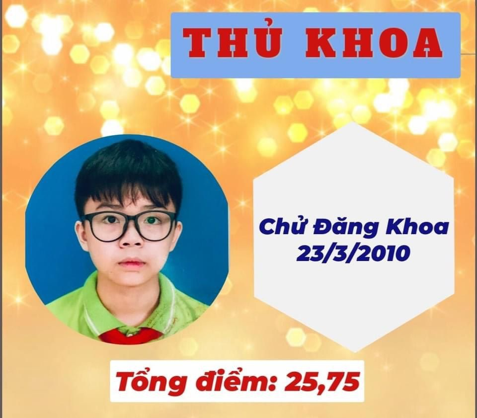

Chử Đăng Khoa - Thí sinh đạt Thủ khoa trong kỳ thi tuyển vào lớp 6 THCS Từ Sơn
Đứng đầu trong top 11 thí sinh Xuất sắc nhất kỳ thi lớp 6 trường Trung học cơ sở Từ Sơn – Nơi ươm mầm tài năng năm học 2021 - 2022, Chử Đăng Khoa - học sinh lớp 5A5 Trường Tiểu học Đình Bảng 2 đã trở thành thủ khoa với số điểm 25.75
Đứng đầu trong top 11 thí sinh Xuất sắc nhất kỳ thi lớp 6 trường Trung học cơ sở Từ Sơn – Nơi ươm mầm tài năng năm học 2021 - 2022, Chử Đăng Khoa - học sinh lớp 5A5 Trường Tiểu học Đình Bảng 2 đã trở thành thủ khoa với số điểm 25.75 . Trong đó, thành tích của Khoa đạt được lần lượt là: Tiếng Việt 8.25, Ngoại ngữ 9.75, Toán 7.75. Trong suốt những năm học dưới mái trường Tiểu học Đình Bảng 2, cậu học trò nhỏ đã luôn nỗ lực và tích cực tham gia mọi hoạt động. Có thể nói Khoa là cậu học trò “toàn năng” ! Em ưu việt nổi trội môn tiếng Anh ; em chân thành và sâu lắng với môn tiếng Việt; em tinh nhạy sắc bén trước các câu hỏi hóc búa trong giờ học khi học môn toán. Khoa rất năng động, tích cực tham gia các hoạt động ngoài giờ lên lớp. Sẽ thật sự thích thú khi thấy Khoa hết mình theo điệu nhảy hiphop sôi động trên sân khấu theo nhịp vỗ tay của các bạn , sẽ ngỡ ngàng khi thấy Khoa là một MC dí dỏm , thông minh….Ở Khoa sẽ luôn mang đến cho chúng ta thật nhiều bất ngờ thú vị ! Em là cậu học trò được thầy cô tín nhiệm giao mọi việc vì biết em sẽ hoàn thành tốt. Em là người được các bạn trong lớp giao cho mọi vai, từ 'bộ óc' của lớp đến hoạt động ngoại khóa; từ diễn viên chính đến diễn viên quần chúng trong các thước phim của lớp , của trường . Em đều nhận vai vui vẻ và hoàn thành xuất sắc”.Năm học 2020-2021, không chỉ đứng đầu kỳ thi vào trường Chất lượng cao Khoa còn giành được giải “Khuyến khích Trạng nguyên toàn tài ” và “Xuất sắc Kỳ thi Đình – Cuộc thi Trạng nguyên Tiếng Việt” cấp Quốc gia . Trưởng thành từ ngôi trường Tiểu học Đình Bảng 2 , Chử Đăng Khoa đã không phụ sự kỳ vọng của thầy cô và cha mẹ mình . Thầy cô tin em sẽ tiếp tục nỗ lực và phát huy thành tích học tập của mình trong ngôi trường mới !
